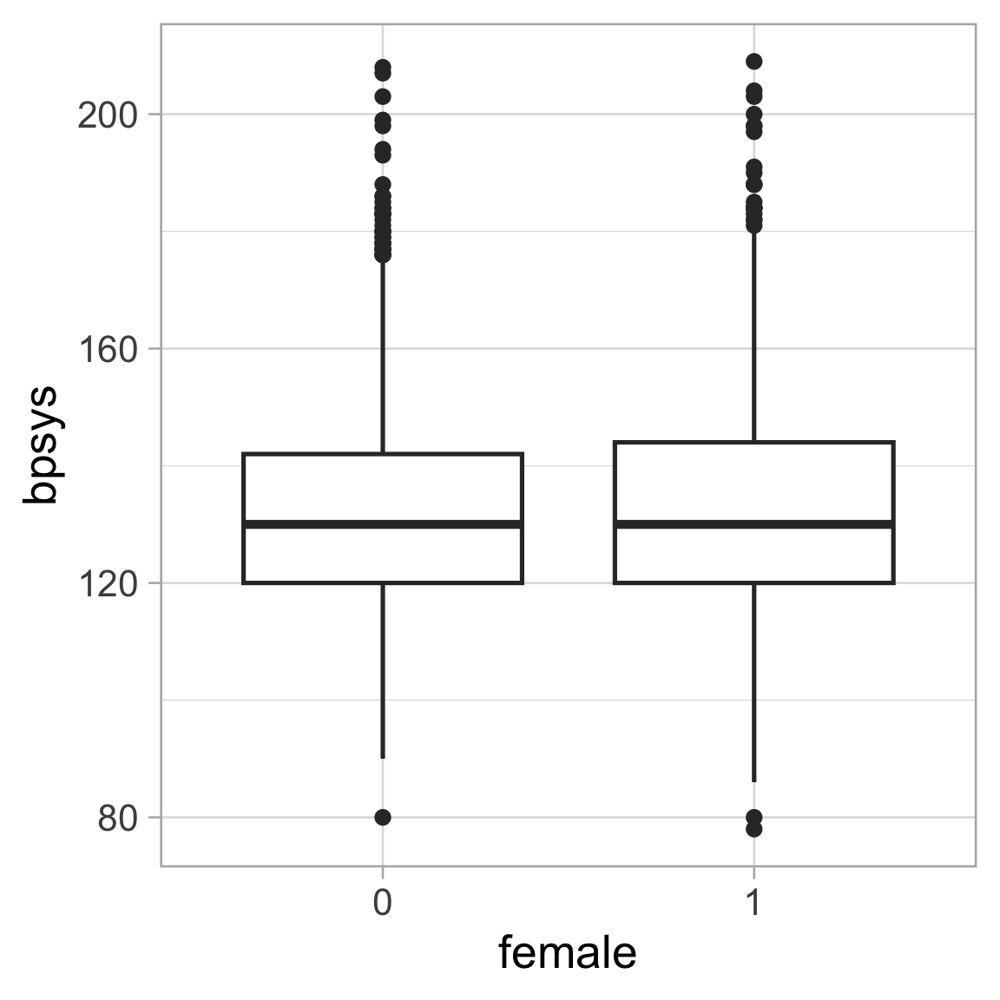
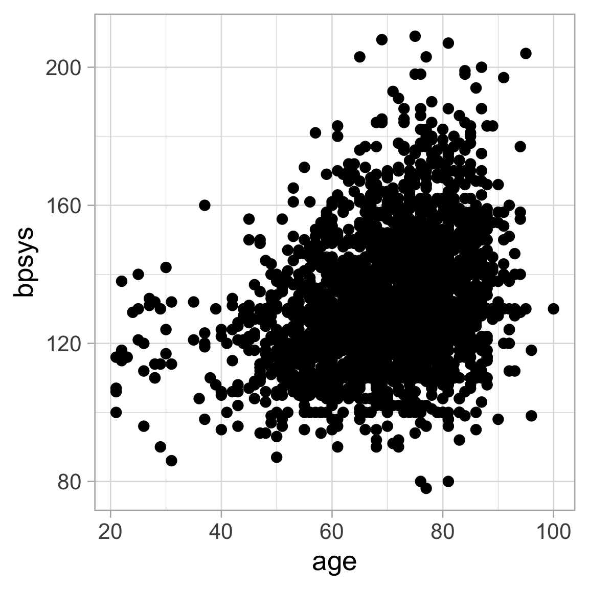
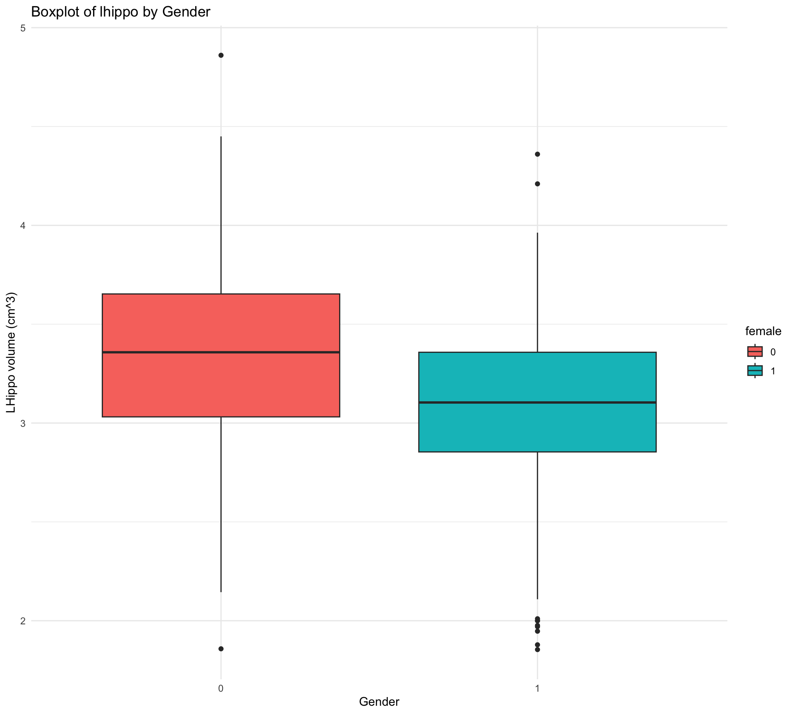
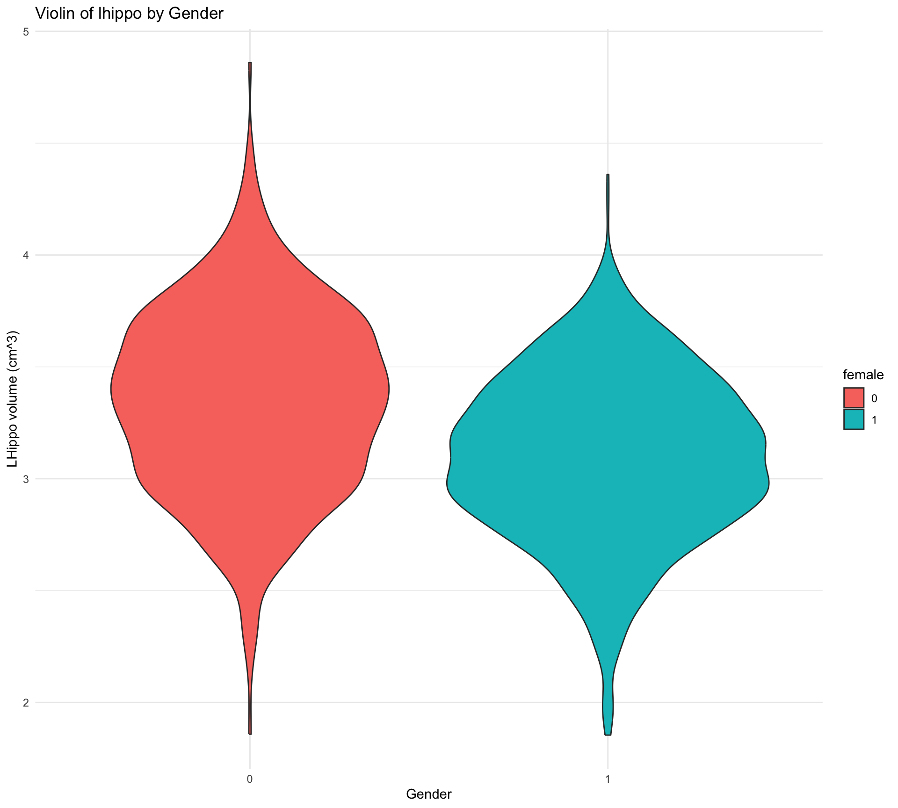
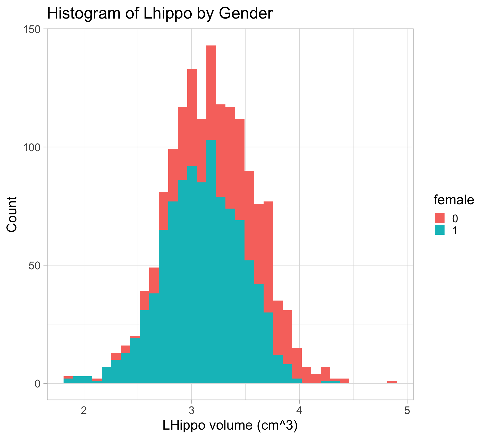
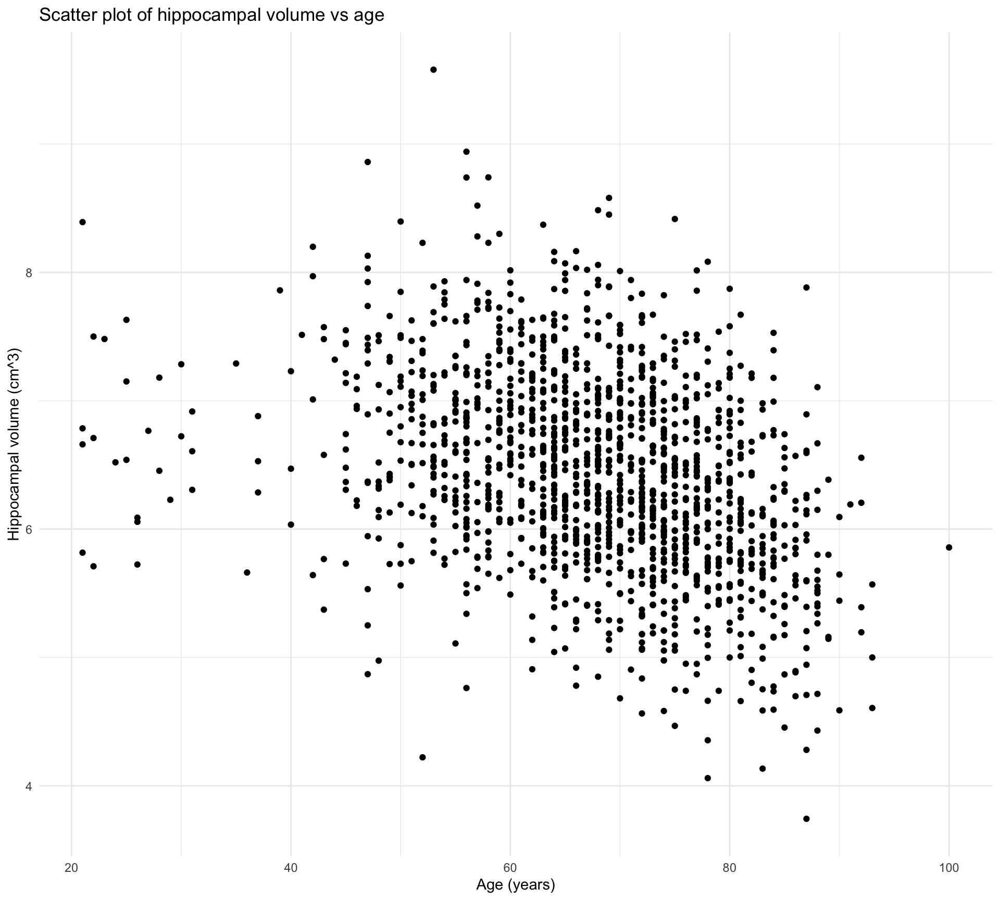
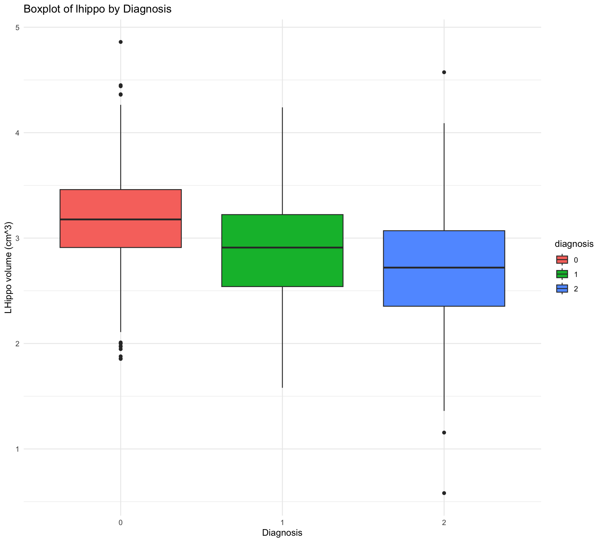

library(tidyverse)
df <- read.csv("../../data/alzheimer_data.csv") Min. 1st Qu. Median Mean 3rd Qu. Max.
5.552 8.861 9.934 10.045 11.251 14.883 [1] 9.695063 10.395611
attr(,"conf.level")
[1] 0.95We can lower our confidence level, which leads to a narrower interval:
To have a higher confidence level, we need a broader interval:
We mentioned hypothesis testing earlier, let’s try and perform a hypothesis test in R.
\(H_0:\mu=10\) vs. \(H_A:\mu\neq10\)
\(H_0:\mu=10\) vs. \(H_A:\mu>10\)
\(H_0:\mu=9\) vs. \(H_A:\mu>9\)
Try to get a 90 percent confidence interval for the population mean of age among AD subjects.
Try to get a 90 percent confidence interval for the population mean of age among AD subjects.
Test whether the population mean of age is 70 or greater than 70 and get the p-value.
\(H_0:\mu=70\) vs. \(H_A:\mu>70\)
Test whether the population mean of age is 70 or greater than 70 and get the p-value.
\(H_0:\mu=70\) vs. \(H_A:\mu>70\)
Simulated data
\(H_0:p=0.3\) vs. \(H_A:p\neq0.3\)
Test whether the population proportion is 2/3.
Get a 95 percent confidence interval for the population proportion.
Is blood pressure associated with gender?

We can examine whether the average blood pressure is different between male and female? Note that the boxplots above show the medians not the means.
\(H_0:\mu_M=\mu_F\) vs. \(H_A:\mu_M \neq \mu_F\)
Question: Are age and blood pressure correlated?

\(H_0:\) They are NOT correlated. vs. \(H_A:\) They are correlated.
\(H_0:\) They are NOT correlated. vs. \(H_A:\) They are positively correlated.
Question: Are gender and disease status associated with each other?
\(H_0:\) They are independent vs. \(H_A:\) They are NOT independent.
Let’s do a little data transformation first
alzheimer_data <- read.csv('../../data/alzheimer_data.csv') %>%
select(id, diagnosis, age, educ, female, height, weight, lhippo, rhippo) %>%
mutate(diagnosis = as.factor(diagnosis),
female = as.factor(female),
hippo=lhippo + rhippo)
alzheimer_healthy <- read.csv('../../data/alzheimer_data.csv') %>%
select(id, diagnosis, age, educ, female, height, weight, lhippo, rhippo) %>%
mutate(diagnosis = as.factor(diagnosis),
female = as.factor(female),
hippo=lhippo+rhippo) %>%
filter(diagnosis==0)Ex 1. Is the hippocampal volume of healthy males greater than 6 cm\(^3\)? (Done)
Ex 2. Is the proportion of healthy adults with a right hippocampal volume > 3cm\(^3\) equal to 50%? (can be done by using the method for testing a proportion: z-test)
Ex 3. Do healthy men and women have the same mean left hippocampal volume?
Ex 4. Is the left hippocampal volume equal to the right hippocampal volume in humans?
Ex 5. Is having a large hippocampus (> 7 cm\(^3\)) associated with gender?
Ex 6. Is hippocampal volume correlated with age in healthy adults?
Ex 7. Does left hippocampal volume differ across diagnostic groups?
Ex 3. Do healthy men and women have the same mean left hippocampal volume?
Categorical (gender) and Numerical (Left Hippocampus) :
Side by Side Boxplot
Side by Side Violin
2 Histograms



Welch Two Sample t-test
data: alzheimer_healthy$lhippo[alzheimer_healthy$female == 0] and alzheimer_healthy$lhippo[alzheimer_healthy$female == 1]
t = 11.756, df = 971.28, p-value < 0.00000000000000022
alternative hypothesis: true difference in means is not equal to 0
95 percent confidence interval:
0.2088777 0.2925882
sample estimates:
mean of x mean of y
3.345749 3.095016
Welch Two Sample t-test
data: alzheimer_healthy$lhippo by alzheimer_healthy$female
t = 11.756, df = 971.28, p-value < 0.00000000000000022
alternative hypothesis: true difference in means between group 0 and group 1 is not equal to 0
95 percent confidence interval:
0.2088777 0.2925882
sample estimates:
mean in group 0 mean in group 1
3.345749 3.095016 Research Question: Is the left hippocampal volume equal to the right hippocampal volume in humans?
Null Hypothesis: Human’s left hippocampus volume is the same as the right hippocampus volume.
Alternative Hypothesis: Human’s left hippocampus volume is not the same as the right hippocampus volume.
\[H_0: \mu_L = \mu_R \mbox{ vs } \mu_L \not= \mu_R\]
Paired t-test
data: alzheimer_data$rhippo and alzheimer_data$lhippo
t = 17, df = 2699, p-value < 0.00000000000000022
alternative hypothesis: true mean difference is not equal to 0
95 percent confidence interval:
0.07008463 0.08836085
sample estimates:
mean difference
0.07922274
One Sample t-test
data: alzheimer_data$rhippo - alzheimer_data$lhippo
t = 17, df = 2699, p-value < 0.00000000000000022
alternative hypothesis: true mean is not equal to 0
95 percent confidence interval:
0.07008463 0.08836085
sample estimates:
mean of x
0.07922274 Research Question: Is having a large hippocampus (> 7 cm\(^3\)) associated with gender?
This is a category variable vs category variable problem
Method: chi-squared test
0 1
FALSE 843 1374
TRUE 308 175
Chi-squared test for given probabilities
data: table(alzheimer_data$rhippo > 7, alzheimer_data$female)
X-squared = 58.668, df = 1, p-value = 0.00000000000001866Research Question: hippocampal volume correlated with age in healthy adults?
Null Hypothesis: hippocampal volume and age are not correlated.
Alternative Hypothesis: hippocampal volume and age are not correlated.
\[H_0: \rho=0 \mbox{ vs } H_1: \rho\not=0\]

Discussion: is there a linear trend? are there regions of concerns?
Pearson's product-moment correlation
data: alzheimer_healthy$age and alzheimer_healthy$hippo
t = -15.125, df = 1532, p-value < 0.00000000000000022
alternative hypothesis: true correlation is not equal to 0
95 percent confidence interval:
-0.4032192 -0.3160971
sample estimates:
cor
-0.360444
Call:
lm(formula = alzheimer_healthy$hippo ~ alzheimer_healthy$age)
Residuals:
Min 1Q Median 3Q Max
-2.57311 -0.48368 -0.01818 0.49369 2.80738
Coefficients:
Estimate Std. Error t value Pr(>|t|)
(Intercept) 8.00629 0.10570 75.75 <0.0000000000000002 ***
alzheimer_healthy$age -0.02329 0.00154 -15.12 <0.0000000000000002 ***
---
Signif. codes: 0 '***' 0.001 '**' 0.01 '*' 0.05 '.' 0.1 ' ' 1
Residual standard error: 0.7209 on 1532 degrees of freedom
Multiple R-squared: 0.1299, Adjusted R-squared: 0.1294
F-statistic: 228.8 on 1 and 1532 DF, p-value: < 0.00000000000000022Research Question: Does left hippocampal volume differ across diagnostic groups?
Null Hypothesis:
Alternative Hypothesis:
\[H_0: \mu_0=\mu_1=\mu_2 \mbox{ vs } H_1: \mbox{ at least two means are different}\]

Df Sum Sq Mean Sq F value Pr(>F)
alzheimer_data$diagnosis 2 100.5 50.27 247.1 <0.0000000000000002 ***
Residuals 2697 548.6 0.20
---
Signif. codes: 0 '***' 0.001 '**' 0.01 '*' 0.05 '.' 0.1 ' ' 1 Df Sum Sq Mean Sq F value Pr(>F)
diagnosis 2 100.5 50.27 247.1 <0.0000000000000002 ***
Residuals 2697 548.6 0.20
---
Signif. codes: 0 '***' 0.001 '**' 0.01 '*' 0.05 '.' 0.1 ' ' 1Ex 1. Is the hippocampal volume of healthy males greater than 6 cm\(^3\)? (one-sample t-test)
Ex 2. Is the proportion of healthy adults with a right hippocampal volume > 3cm\(^3\) equal to 50%? (one-sample proportion test or z-test)
Ex 3. Do healthy men and women have the same mean left hippocampal volume? (two-sample t-test)
Ex 4. Is the left hippocampal volume equal to the right hippocampal volume in humans? (paired t-test)
Ex 5. Is having a large hippocampus (> 7 cm\(^3\)) associated with gender? (chi-squared test)
Ex 6. Is hippocampal volume correlated with age in healthy adults? (Pearson’s correlation or linear regression)
Ex 7. Does left hippocampal volume differ across diagnostic groups? (one-way ANOVA or linear regression)